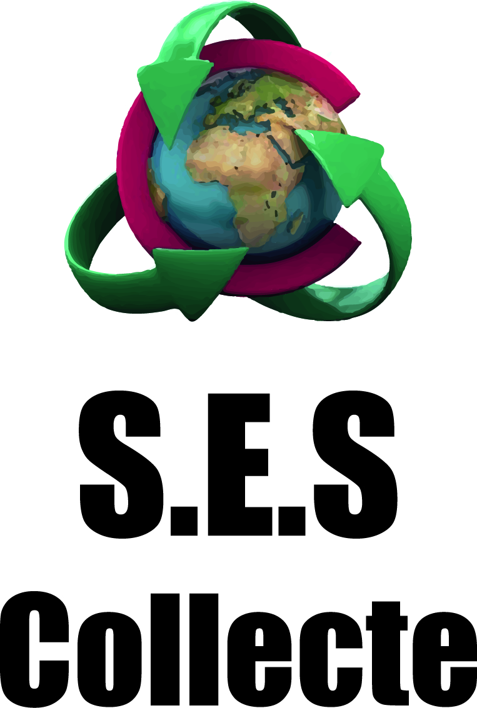
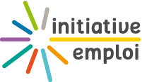
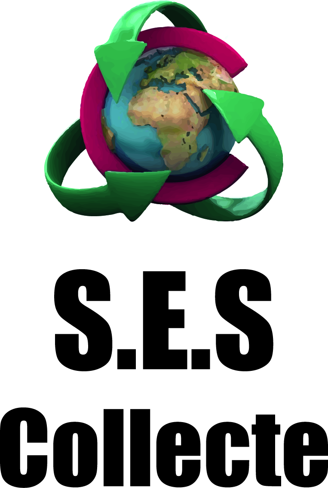
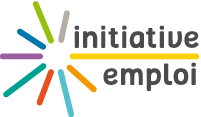

PTCE TETRIS "Transition Ecologique Territoriale par la recherche et l'Innovation Sociale" Pour rappel le PTCE : La SCIC TETRIS porte le Pôle Territorial de Coopération Économique "Transition Écologique Territoriale par la recherche et l'Innovation Sociale" qui réunit des moyens d’accompagnement et des structures partenaires pour faire émerger et développer des activités socio-économiques favorisant à la fois le développement économique des structures membres et le développement local durable dans une démarche d’innovation sociale.
Pour ce faire, TETRIS met ainsi en dynamique un Centre de transfert non technologique, un Incubateur de projet, les activités socio-économiques d'entreprises classiques et de l’Économie Sociale et Solidaire exerçant des pratiques confirmées en termes de développement soutenable ou souhaitant intégrer une démarche d'amélioration continue.
TETRIS c’est 1500 m2 de locaux industriels mutualisés, 79 emplois consolidés dont 43 en insertion sur 2015. Le PTCE TETRIS c’est un laboratoire opérationnel innovant qui met en place les conditions nécessaires à l’émergence de compétences collectives au service de besoins non (ou mal) satisfaits sur un territoire guidé par quatre principes : une démarche de travail interactive dédiée à l’innovation sociale, une entité statutaire coopérative (SCIC), la co-production d'activités socio-économiques (offre de services mutualisés) et d'événements collaboratifs territorialisés (colloques, séminaires, salons et marchés locaux), la recherche d'une visée stratégique commune du territoire.
Le PTCE TETRIS se sont également des partenaires associés à la démarche (situés en dehors des locaux) et notamment la recyclerie « Les fées contraires » portée par la Régie de quartier Soli-Cités qui ouvrira ses portes courant octobre au cœur du quartier politique de la ville « Les Fleurs de Grasse ».
L'objectif : Contribuer au rayonnement et à l'attractivité du Pays de Grasse, en y expérimentant les leviers du developpement local durable, dans un processus d'innovation sociale.
- Gestion des ressources et des déchets.
- Developpement des mobilités.
- Produire et échanger autrement.
- Developpement d'une économie sociale du numérique.
- En developpant des partenariat avec la SCIC TETRIS.
- En co-construisant avec la SCIC TETRIS des projets répondant à vos besoins et à nos finalités.
- En demandant à devenir associé de la SCIC.
- En devevant mécéne (dans le cadre des incitations fiscales existantes)
- Par du mécénat financier.
- Par du mécénat en nature.
- Par du mécénat de compétences.
 


